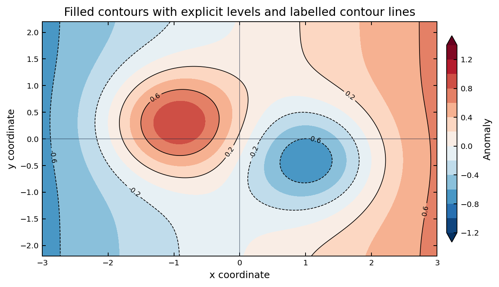

学习目标
- 能用
np.meshgrid()构造二维坐标。 - 能区分
contour和contourf。 - 能添加等值线标签并解释
levels。
核心概念
contour 画线，适合高度场、气压场和温度线；contourf 画填色，适合异常场、降水和湿度背景。关键前提是 X、Y、Z 形状匹配。

levels，避免每次运行自动生成不同层级。最小可运行代码
这段代码构造一个理想化高度场和温度异常场。先画填色，再叠加黑色等值线。
contour + contourf
import numpy as np
import matplotlib.pyplot as plt
lon = np.linspace(70, 140, 141)
lat = np.linspace(15, 55, 81)
X, Y = np.meshgrid(lon, lat)
height = 5800 + 80 * np.sin(X / 10) * np.cos(Y / 8)
anom = 3 * np.sin((X - 100) / 15) * np.cos((Y - 35) / 8)
fig, ax = plt.subplots(figsize=(7, 4), dpi=120)
cf = ax.contourf(X, Y, anom, levels=np.arange(-3, 3.5, 0.5),
cmap="RdBu_r", extend="both")
cs = ax.contour(X, Y, height, levels=np.arange(5720, 5881, 40),
colors="k", linewidths=0.8)
ax.clabel(cs, fmt="%.0f", fontsize=8)
ax.set_xlabel("Longitude")
ax.set_ylabel("Latitude")
fig.colorbar(cf, ax=ax, label="Temperature anomaly (deg C)")
fig.tight_layout()
plt.show()常见错误与修正
维度不匹配
lon、lat 是一维，Z 是二维。修正：用 np.meshgrid(lon, lat)。
等值线标签没有出现
只调用 contour 不会自动标值。修正：保存返回值并调用 ax.clabel(cs)。
参数名写错
contour 常用 colors、linewidths，不是单数 color。
课堂练习
把高度场等值线间隔从 40 改为 20，观察标签密度是否影响读图。
小结
二维场图先检查维度，再设置 levels，最后添加色标和等值线标签。